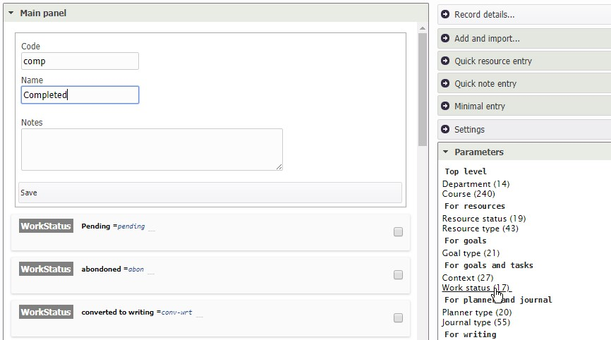

Installation and Configuration
Installation
To install Nibras, you have one of three options:
Quick installation
The quick installation consists of three steps:
- Download the bundle file corresponding to your platform, e.g. nibras-bundle-windows.zip.
- Extract the zipped file to a location of your choice on your local disk.
- Launch Nibras by double clicking on ./scripts/start file.
Once Nibras has finished launching, a text message like the one below will appear.
************************************************************
* Nibras has launched. You can access it from: *
* https://localhost:1441/nibras *
************************************************************
Note: To stop Nibras, you can close this window, or press ctrl+c in it, or run ./scripts/stop script.
and finally download, extract and run the Nibras-Tomcat bundle as detailed below.
To launch the application server, simply download and extract the file Nibras-Tomcat.zip from the releases section on Nibras PKM GitHub page to your hard disk on C:/, and run the batch file "Start-Nibras.bat" found on the /Nibras-Tomcat folder.
This is the straightforward way to install Nibras on a typical computer. However, you may have other cases that needs changing Nibras configuration files, or its Nibras settings after launching it.
Production installation
In addition to the steps of the quick installation, you need to download and install MySQL 5.5 or later.
MySQL
To install MySQL, simply download, install it, and then configure it. You can download from the official website, or, for convenience, from this location (for Windows).
After installation, you need to run the configuration wizard, accepting the default options, and making the two below changes:
- Check on "Add to the path"
- Set the root password as "root". So you need to type the word "root" (without quotes) two times.
Then you are ready to run the batch file "create-database.bat" found in /Nibras/Database folder.
Other cases
Your environment may not match or allow the above installation, and so you may want to customize it.
1 - MySQL already installed:
Need to change the parameters of MySQL connection in /Nibras/Application/Tomcat/conf/context.xml; specifically changing the hostname, port, username and password.
2- Port 80 already occupied:
Need to change port 80 in file /Nibras/Application/Tomcat/conf/server.xml to another port e.g. 81, or 2019.
3 - Different location to extract "Nibras.zip":
Need to update the paths in the startup script "Start-Nibras.bat" to match the new location.
4 - Different location for the repository:
Need just to change the setting value "root.rps1.path" inside the application after running it.
Advanced installation
If you have a supported application server e.g. Tomcat, and MySQL already installed, you just need to install the war file (from the releases section on Nibras PKM github page), and delploy it after configuring its access to the database.
Nibras uses a JNDI named db_nibras. In tomcat, you can put this tag below the tag
<Resource auth="Container"
driverClassName="com.mysql.jdbc.Driver"
name="jdbc/db_nibras" type="javax.sql.DataSource"
url="jdbc:mysql://localhost:3306/db_nibras"
username="nibras-user" password="the-password"/>
after chaning the username and password of the account to use to access the database.
- install the database server MySQL, and create the database to be used by Nibras.
- launch the application server Tomcat (that runs Nibras).
Update
To update the Nibras applicatin, simply download the latest war file the releases page, and put it under (Nibras-path)/Tomcat/webapps, after deleting the existing nibras.war file and nibras folder.
It's better to shutdown Nibras first (clicking on Stop-Nibras.bat) before doing the upgrade.
Access
To access the application, go to https://localhost:2019/nibras from your browser (Firefox and Chrome recommended), then enter the username: admin and password: admin.

Configuration
Aside from the configuring Tomcat and MySQL, Nibras configuration is done through the application itself, from the Setting panel, on the right of the screen.

12. First steps Decide on the repository locations. Decide on the modules you want to use (the modules enabled by default are: notes, tasks, and resources). * Decide on the parameters (types, statuses, contexts etc) that best reflect your information needs.
- Enter the above choices through the settings and parameters panels.

Note: It's better to start with the minimal number of modules, and enable more module with time. This will speed up learning time and reduce the complexity of using it.